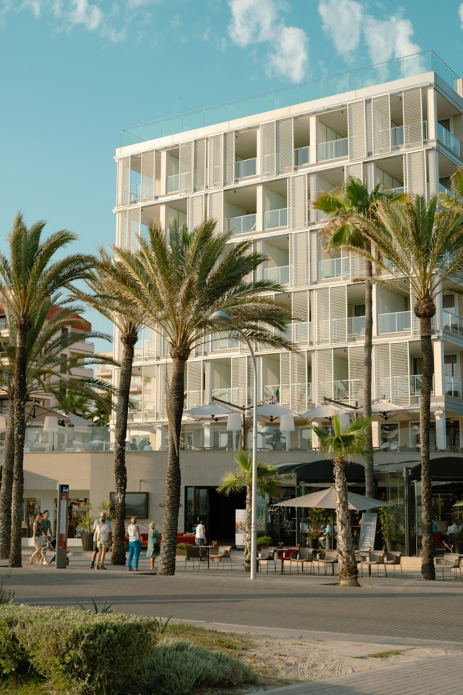
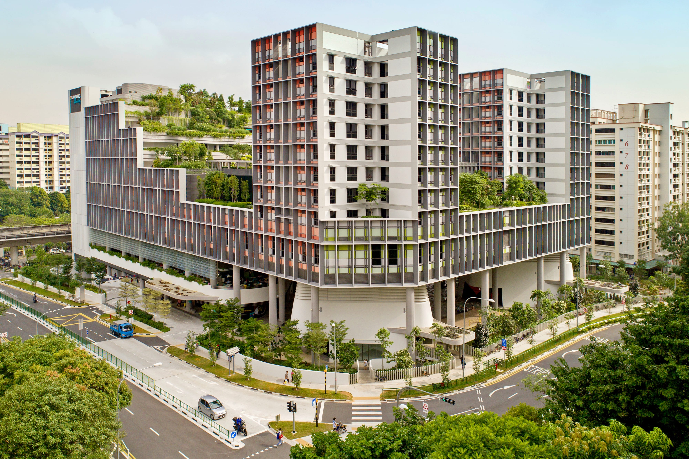

Site survey, façade review and cleaning-area measurement.

SERVICES / FAÇADE
Drone cleaning for high-rise façades
Altitude Robotics cleans exterior glass, façades and cladding. Reduce access setup and gondola mobilisation, with a digital site record captured as part of the clean.
Reference footage · Lucid Bots
The incumbent
Gondolas, BMUs and rope access make access the cost centre.
For FMs, MCSTs and asset managers, the cleaning job often carries the cost and coordination of suspended access before washing starts.
BCA PFI separately applies to many buildings over 13 m and more than 20 years old on a seven-year cycle, subject to exemptions. BCA guidance
The Altitude approach

Reach the façade. Reduce the access setup.
No suspended access for suitable areas
The cleaning crew stays on the ground, avoiding gondola or rope deployment for the areas cleaned by drone.
Lower access burden
Pricing focuses on the cleaning scope rather than building a large suspended-access setup around it.
Data as a byproduct
Before / after imagery, coverage and condition observations become part of the handover.
Side-by-side
| Metric | Gondola / BMU / rope access | Altitude Robotics |
|---|---|---|
| Access method | Gondola / BMU / rope access | Ground-operated cleaning drone |
| Cost per m² | Access + labour + rigging priced into the job | Site-priced after survey; no gondola/BMU mobilisation on suitable areas |
| Mobilisation | Suspended-access setup and checks | Ground system + controlled work zone; no suspended platform setup |
| Building downtime | Access zones can affect entrances and tenant areas | Active exclusion zone only; full-building closure is generally not required |
| People at height | Suspended personnel required | 0 for areas cleaned by drone |
We only publish operating numbers we can validate. Cost per m², site duration and weather limits are confirmed in the quotation after survey.
Typical properties




SCOPE
What is included
- Surfaces: exterior glazing, compatible cladding, painted concrete and façade panels.
- Soiling: dust, atmospheric dirt, bird residue and light organic buildup.
- Included: surface assessment, cleaning plan, controlled wash and QA review.
OPERATING LIMITS
What we will not force
- No flight outside approved CAAS, site or safe weather conditions; rain, lightning and unsafe wind stop work.
- Standoff and spray pressure are set to the surface and manufacturer guidance; this is not contact cleaning.
- Height and reach depend on hose routing, obstacles, permissions and site geometry and are confirmed after survey.
- Loose, damaged or water-sensitive façade elements are excluded until the responsible party approves a safe method.
From survey to handover
Method, test patch and access comparison agreed with FM / owner.
Flight permissions, work-zone plan and required filings prepared.
Drone clean in controlled sections with live visual oversight.
QA review and digital handover.
DELIVERABLE
A clean plus a usable site record.
- Before / after imagery
- Coverage map by elevation or work zone
- Condition observations flagged during cleaning
The handover supports maintenance planning. It does not replace a statutory BCA Periodic Façade Inspection or the appointed Competent Person.
Common questions
Does this replace BCA PFI?
No. Altitude’s imagery and observations are cleaning deliverables and maintenance records. Statutory PFI remains under the appointed Competent Person.
Can you clean coated glass?
We check the coating and manufacturer guidance before choosing the method.
Can you remove every stain?
Heavy mineral deposits and bonded stains may need additional treatment. We identify these during assessment.
Get a quote now!
Send your façade details. Altitude Robotics will assess the site and provide a quotation.